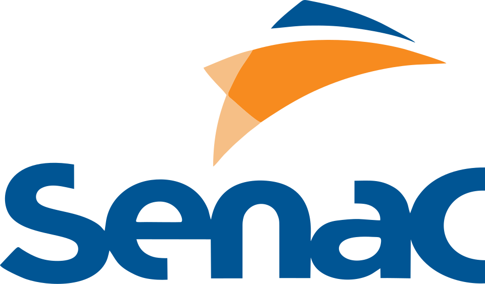

OLÁ, DOCENTE


Aperfeiçoe o seu talento com um dos cursos do Senac e garanta o seu futuro em profissões ligadas a saúde e bem-estar. A área de Saúde está crescendo rapidamente e traz oportunidades de trabalho e desenvolvimento de carreira. Consultórios, clínicas, laboratórios, farmácias e hospitais buscam sempre profissionais qualificados e a marca Senac fará diferença em seu currículo.
Aperfeiçoe o seu talento com um dos cursos do Senac e garanta o seu futuro em profissões ligadas a saúde e bem-estar.
Senac Serra Talhada abre inscrições para Cursos de Férias 17 de dezembro de 2025
Senac abre inscrições para o Ensino Médio Técnico, o Mediotec - 16/12/2025
6ª edição do ‘Natal que Dá Gosto’ acontece nesta terça-feira
Saiba mais